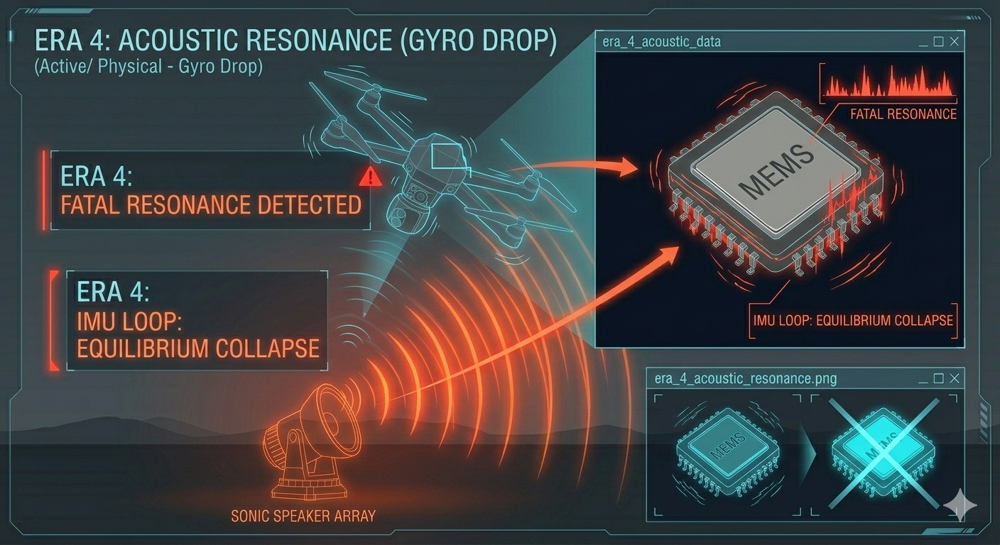

Era 4: Acoustic Resonance (Gyro Drop)
Adversaries discovered that the most direct way to neutralize an autonomous system isn't through its cognitive logic, but through its physical equilibrium. Drones, no matter how advanced their software, rely on micro-electromechanical systems (MEMS) for stability. By attacking the physics of the hardware itself, adversaries created a devastating physical spoof that forces a flight stability failure.

Watch the illustration above. A standard multi-rotor drone is flying ('GYRO DATA: INTERCEPT_READY'). But on the ground, a powerful, directional sonic speaker array (an 'ACOUSTIC WEAPON' emitting specialized, pulsating red sound waves) is shown actively targeting the platform. Arrows connect the sonic weapon to the physical failure ('SONIC ATTACK DETECTED: FATAL GYRO SPIKES'). An internal schematic view projects the microscopic MEMS gyroscope component vibrating wildly, contrasting the normal data against the chaotic, red flickering data of FATAL RESONANCE. The drone, confused about its own level state, tumbles violently out of control ('STATUS: FALLING').
The Exploit: Matching the MEMS Frequency
MEMS gyroscopes and accelerometers utilize microscopic vibrating structures to detect motion. Every physical object has a natural resonant frequency. Researchers discovered that if an acoustic sound wave matches the specific resonant frequency of the microscopic physical components inside the drone’s MEMS gyroscope, it induces chaotic vibration. The sensor reports massive, impossible data spikes to the flight controller.
Hardware Equilibrium Hijack
This is a purely physical exploit that attacks the drone’s balance. The flight controller receives conflicting data, believes it is simultaneously flipping upside down and spinning out of control. It overcompensates aggressively, forcing the drone into a fatal spin or causing an instant power cutoff (the 'Gyro Drop'). It is a brutal, low-cost physical hijack that cannot be filtered by conventional software, as the data being received is fundamentally impossible from a physics perspective.
The Countermeasure Arms Race
Military Fix: Acoustic Dampening and Mathematical Filtering
Hardware manufacturers responded through physical encasement and software filters. Military-grade platforms now encase MEMS components in sound-dampening foam or sophisticated physical isolators. Simultaneously, developers rewrote flight controller logic to detect and ignore these specific impossible data spikes, switching to full inertial data (accelerometers only) during high-noise events.
SkyGuard Override: Structural Validation
All SkyGuard passive kinetic platforms utilize physically isolated and acoustic-dampened inertial measurement units (IMUs). Our software override is **Sensor Cross-Referencing**. While the gyroscope may be compromised, the VST depth engine and the semantic camera feeds are not.
When O.T.I.S. detects IMU instability, it maintains its understanding of true 'level' by cross-referencing against the semantic Structural Skeletonization feed. By isolating the math and the geometry of the target in 3D space, O.T.I.S. can continue calculating the kinetic intercept solution even while the platform itself is physically vibrating.
Maintain lock through physical chaos.
See how Structural Skeletonization tracks targets even when equilibrium fails.
See how O.T.I.S. Sees